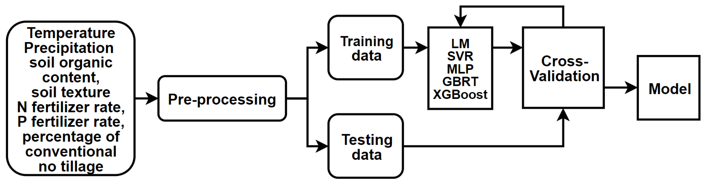
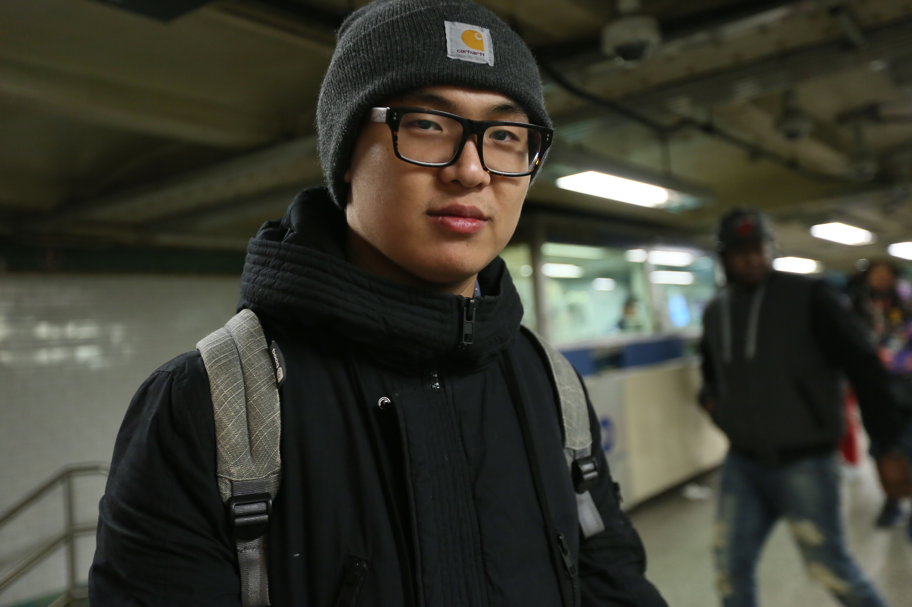

Sustainability (2020)
Research on machine learning methods for predicting life cycle global warming potential.
Ph.D. Candidate in Mathematics | Machine Learning Researcher
I am interested in artificial intelligence, applied machine learning, software systems, and entrepreneurship. My current work focuses on building practical AI tools, multimodal medical AI systems, and useful products that connect research with real-world applications.
Previously, I have worked on model quantization, vision-language models, and data pipelines.
Email / CV / Google Scholar / LinkedIn / GitHub

My interests include large language models, vision-language models, medical AI, efficient inference, model compression, and data-centric AI.
I am Lamber Guo, a Ph.D. candidate in Mathematics at the State University of New York at Albany, with a background in actuarial science, statistics, computer science, and machine learning research. My work includes adversarial robustness, supervised learning modeling, and applied AI systems.
I am interested in mathematics, machine learning, robust AI, and building practical intelligent systems that connect theory with real-world applications.
